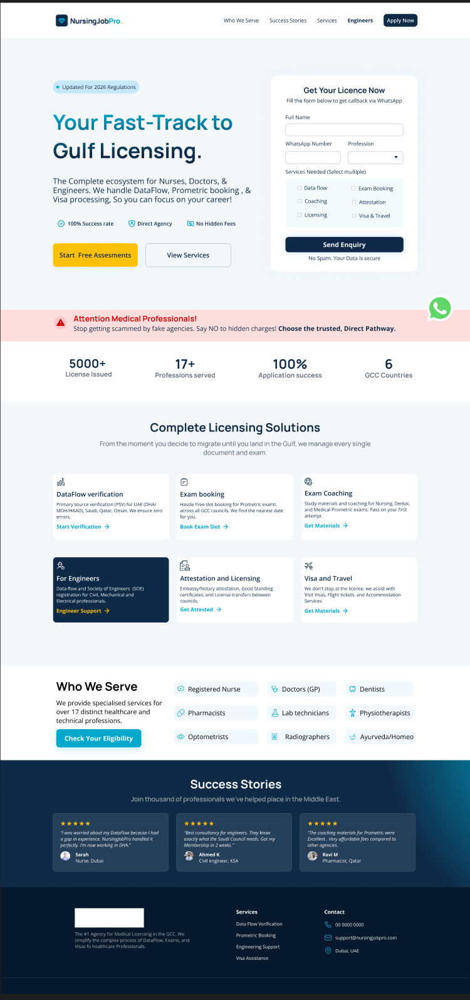

Nursing Job Pro
Nurses, doctors and engineers moving to work in the Gulf don't need a job board first — they need DataFlow verification, exam booking, attestation and a visa sorted, correctly, by a service they can trust with documents that are hard to redo if something goes wrong. This is that product.

The challenge
Getting licensed to practise as a nurse, doctor or engineer in the Gulf isn't one step — it's a sequence most candidates have never navigated before: DataFlow primary-source verification of their credentials, booking and often coaching for a licensing exam, attestation of documents, and visa and travel processing, each with its own requirements and its own ways to go wrong. The real competitor here isn't another job board — it's a patchwork of unlicensed "agents" that candidates in this market are, with good reason, deeply wary of. The homepage's own framing names this directly: "Stop getting scammed by fake agencies. Say NO to hidden charges! Choose the trusted, Direct Pathway."
The design challenge was building something that reads as credible and direct on first impression — because for a candidate who's heard scam stories, trust is earned or lost in the first screen, before any service detail matters.
Approach
I designed the homepage as a single clear ask — "Get Your Licence Now" with a short request form (full name, WhatsApp number, profession, and which services are needed: DataFlow, Coaching, Licensing, Exam Booking, Attestation, Visa & Travel) — rather than making a first-time visitor hunt through a menu of services before they can act. Trust signals sit right next to that form: 100% service coverage and country-specific numbers (5000+ licenses issued, 17+ professions served, 6 GCC countries) stated plainly, not buried in an About page.
Below the fold, the six core services (DataFlow verification, Exam booking, Exam coaching, Licensing support for engineers, Attestation, Visa and travel) are each a distinct card with its own "Get materials/support" link, so a candidate who already knows what they need can go straight there instead of re-explaining their situation from scratch.
What I built
A trust-first web product for Gulf licensing and visa processing.
- A single-form licence request as the primary call to action, with service selection built into the form itself
- Six dedicated service sections: DataFlow verification, exam booking, exam coaching, engineer licensing support, attestation, and visa & travel
- Trust and scale signals (licenses issued, professions served, countries covered) placed directly against the anti-scam messaging they're meant to support
- A "Who We Serve" section scoping eligibility across nurses, doctors, dentists, pharmacists, lab technicians, physiotherapists, optometrists, radiographers and Ayurveda/Homeo practitioners
- Success-story testimonials from real professional categories (a nurse, an engineer, a physiotherapist) placed right before the footer, as the last trust reinforcement before someone leaves the page
Outcome
A complete homepage and service-page design for a trust-first Gulf licensing product, built to compete against informal agents on credibility rather than price.
The core design bet is that a single, low-friction intake form beats a service catalogue as the first thing a visitor sees — most people arriving already know roughly what they need (a licence, sorted, by someone who won't scam them), and the fastest path to that is the win.